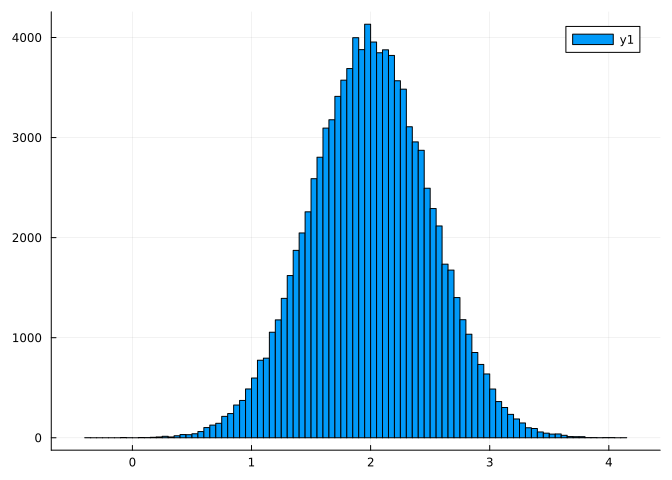

using Random
using Distributions
using PlotsDefinitions
- \(N\):= numbers of observations per sample.
- \(K\):= number batches (can be thought of as number of bootstraps).
- \(M\):= number of observations per batch (\(\frac{N}{K}\)).
- \(\theta\):= mean of a sample.
- \(\theta^{b}\):= mean of a batch (bootstrap).
- \(\sigma\):= standard deviation of sample.
- \(\sigma_b\):= standard deviation of a batch.
- \(R\):= root statistic comparing two means (an empirical mean to a bootstrap).
- \(S\):= standard error of a sample (“Outer SE”).
- \(S_b\):= standard error use in the calculation of \(R\) (“Inner SE”).
- \(\alpha\):= significance level of a comparison.
- \(d\):= \(1-\alpha\) quantile of a vector of \(R\)s.
- \(Z\):= \(\in [N,M,K]\), factor to test the use of in the function.
Random.seed!(8675309)
N = 10000
K = 100
M = Int(N/K)100The log-normal distribution:
\[ X \sim Normal(\mu, \sigma) \]
Then: \[ exp(X) \sim LogNormal(\mu,\sigma) \]
Mathematical Functions
These are the functions we’re using for math calculations (as opposed to the programmatic, automation/simulation functions).
Computing \(R\)
### Compute the R statistic. Z is the constant used for the division (M, N, K)
function calc_root_stat(m1, m1b, sd1b, m2, m2b, sd2b, Z)
se = sqrt( ((sd1b^2)) + ((sd2b^2) * (Z^-1)) )
abs( (m1b - m2b) - (m1 - m2)/se )
endcalc_root_stat (generic function with 1 method)Standard Error \(S\)
Stander Error for a batch \(S_b\)
Simulation Functions
function generate_sample(mu, sd, N)
exp_vector(vec) = [exp(i) for i in vec]
exp_vector(rand(Normal(mu, sd), N))
end
samples = [generate_sample(2, 0.5, N) for i in 1:2]
histogram(samples[1])I will now write a separate function to get the information about sample needed to make a comparison.
### will conduct batch bootstrapping and collect relevant data on the sample
function get_batch_info(sample, sample_name, K)
# arrays to store means and SDs
theta_boots = []
sd_boots = []
# this algorithm indexes arrays at...
# 1-100
# 101-200
# 201-300
# etc
i = 1
for x in 1:K
# the upper limits, ie, 1-100
j = i + (M-1)
batch = sample[i:j]
### (debug) println("from ", i, " to ", j)
# collect the figures
push!(theta_boots, mean(batch))
push!(sd_boots, std(batch))
# increase by the batch size the set the next limit
i += M
end
Dict(
"name" => sample_name,
"mean" => mean(sample),
"sd" => std(sample),
"bootstrap_means" => theta_boots,
"bootstrap_sds" => sd_boots
)
end
sample1 = get_batch_info(samples[1], "sample1", K)Dict{String, Any} with 5 entries:
"name" => "sample1"
"bootstrap_sds" => Any[4.36335, 5.42013, 3.97525, 4.31948, 4.04444, 5.56318…
"bootstrap_means" => Any[8.30349, 8.42795, 8.32042, 8.30544, 8.44921, 9.15441…
"mean" => 8.4782
"sd" => 4.58788Now we have a dictionary containing the information about a samples we need to compare it to another. We will get another sample to compare it to.
sample2 = get_batch_info(samples[2], "sample2", K)Dict{String, Any} with 5 entries:
"name" => "sample2"
"bootstrap_sds" => Any[6.13506, 4.27489, 4.44676, 4.04586, 4.13877, 3.5623,…
"bootstrap_means" => Any[9.18479, 8.30144, 8.54251, 8.12945, 8.36763, 7.65243…
"mean" => 8.38915
"sd" => 4.48351### makes comparisons and returns a vector of R statistics
### z is the N, K, or M we're testing
function pairwise_comparison(s1, s2, f, Z)
s1_theta = sample1["mean"]
s1_theta_boots = sample1["bootstrap_means"]
s1_sd_boots = sample1["bootstrap_sds"]
s2_theta = sample2["mean"]
s2_theta_boots = sample2["bootstrap_means"]
s2_sd_boots = sample2["bootstrap_sds"]
# a vector to collect the R statistics
R_stats = []
# the number of iterations must match the number of batches, K
for i in 1:K
R = f(
s1_theta, s1_theta_boots[i], s1_theta_boots[i],
s2_theta, s2_theta_boots[i], s2_theta_boots[i],
Z
)
push!(R_stats, R)
end
R_stats
end
R_stats_N = pairwise_comparison(samples[1], samples[2], calc_root_stat, N)
R_stats_K = pairwise_comparison(samples[1], samples[2], calc_root_stat, K)
R_stats_M = pairwise_comparison(samples[1], samples[2], calc_root_stat, M)
histogram(R_stats_N)
# d = quantile(r_stats, 1-0.05)
# println("d is: ", d)
# se = sqrt( (sd1^2) + (sd2^2) * (N^1) )
# println("low ", (m1 - m2) - (d*se) )
# println("observed ", (m1 - m2))
# println("high ", (m1 - m2) + (d*se) )